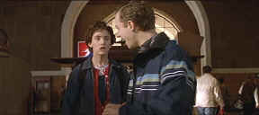

|
Carla’s return home from years at a special school is
fraught with the same difficulties that existed before she was sent
away as a young girl. This time around she is better equipped to
cope with being different. She has to overcome her mother’s
unconscious denial of her slowness, survive the marriage of her
middle sister and overcome the daily perils of a young woman making
a life for herself. Fortunately she has the loving support of her
father, who though he caves in to his wife all too often, has enough
love to help Carla express herself. Most importantly, she finds
Danny, a friend with similar limitations, and together they explore
the new world opening for them around the picturesque hills of San
Francisco.
 |
|
Carla and Danny find each
other. ©Touchstone |
The reception of The Other Sister definitely depends on mood.
It would be easy to resent the portrayal of these characters or to
put off by some of the more embarrassing moments. I am glad that my
mood didn’t prevent me from enjoying the warmer and less
predictable elements of the movie. Some of the family situations
were difficult to accept, but in the end the winning
characterizations overpower the shallower ones.
Juliette Lewis gives a richly textured
performance as Carla Tate. It takes a little time to get used to
her, but once you succumb to her charms, the character takes off.
One of the wonders of Carla’s performance is that you never really
know how she will react. Lewis’s performance overcomes the
predictable and coy elements in the script. Lewis finds a nice
balance between comedy and drama in bringing Carla to life.
Diane Keaton plays her mother with nothing more than the script
allows. Keaton has done this frantic, cold gig before in films.
Giovanni Ribisi is sweet as Danny, but he’s often rather stiff and
likewise cannot soar beyond the confines of the script. Tom Skerritt
is very appealing as the dad.
Director Garry Marshall handles everything
in breezy style, both a virtue and weakness of The Other Sister.
Actors do fare well under Marshall’s guidance. He knows where to
find their appeal. There’s no denying the man knows his comedy,
but The Other Sister steps over the line too far toward
unrewarding pathos. The production looks handsome and the
varied elements are well controlled by Marshall.
Lively colors transferred with vitality
help express the sprit of The Other Sister. Saturated reds
and delicate pinks are replicated with equal ease. There’s plenty
of punch to the picture with a bold contrast ratio. Few if any
annoying artifacts show up on this DVD, though edge ringing is
evident in many scenes. Overall, this is a solid DVD presentation.
The sound is pleasing, if unexceptional. Surrounds are not overly
active, but then there are no bullets flying around the rooms of The
Other Sister. Included with the feature are two music videos
that make for enjoyable codas to this likable DVD.
|